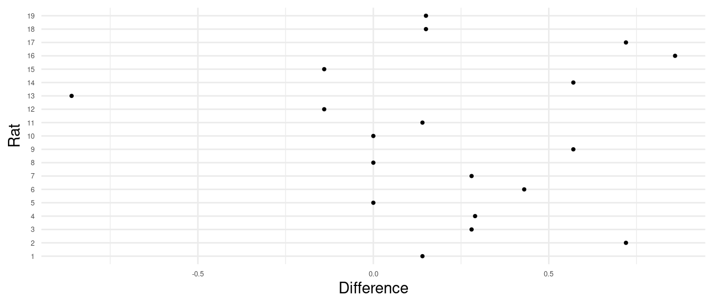

You can also download a PDF copy of this homework assignment.
Instructions: These homework problems concern composite null hypotheses, the use of confidence intervals for statistical tests, and the sign tests. The solutions for the composite null hypothesis and confidence interval problems problems are given at the end.1 For the sign test problems the answer is given and you are asked to confirm the answer by computing it yourself.
Researchers at the National Institutes of Hobbit Health (NIHH) were interested in determining if there had be an increase in the incidence of foot lice in the West Farthing. A year ago a very large survey had estimated that 15% of Hobbits in the West Farthing had foot lice. This year resources were not available for such a large survey, so the researchers obtained a random sample of only 100 Hobbits from the West Farthing and tested them for foot lice. Of those Hobbits 20 tested positive for foot lice. Let \(p\) be the probability of sampling a Hobbit with foot lice this year. Then \(p\) is also the proportion of Hobbits in the population that have foot lice this year. The question then is whether this proportion has increased since last year (i.e., \(p > 0.15\)) or not (i.e., \(p \le 0.15\)). Conduct a statistical test with the composite null hypothesis \(H_0: p \le 0.15\) versus the composite alternative hypothesis \(H_a: p > 0.15\) using a significance level of 0.05.
A quality control analyst is responsible for maintaining the quality of Vegemite produced and packaged at a production facility. The facility produces many thousands of bottles per run. To monitor the production process the analyst using simple random sampling to select a few bottles from each run and tests them. One thing she monitors is if the bottles are over-filled or under-filled, on average. These bottles should contain about 220g of Vegemite. Each bottle will contain an amount that deviates from that by some amount which is tolerable if the deviation is not too large. But problems can arise if the bottles are contain too much or too little Vegemite, on average. In what follows let \(\mu\) denote the mean amount of Vegemite per bottle in a run. The analyst tries to determine if \(\mu\) becomes higher than 230g or lower than 210g.
During one production run a random sample of 25 bottles was selected. The mean contents per bottle in this sample was 235 grams, and the standard deviation was 10 grams. Conduct a test with the composite null hypothesis \(\mu \le 230\) versus the composite alternative hypothesis \(\mu > 230\). Use a significance level of 0.05.
During another production run a random sample of 25 bottles was selected. The mean contents per bottle in this sample was 207 grams, and the standard deviation was 15 grams. Conduct a test with the composite null hypothesis \(\mu \ge 210\) versus the composite alternative hypothesis \(\mu < 210\). Use a significance level of 0.05.
Suppose I computed two confidence intervals for \(\mu\) based on a sample of observations. The first confidence interval, \[ 105 \pm 4.128 \Leftrightarrow (100.872, 109.128), \] is based on a confidence level of 95%. The second confidence interval, \[ 105 \pm 5.594 \Leftrightarrow (99.406, 110.594), \] is based on a confidence level of 99%.
Now consider statistical test with the hypotheses \(H_0\!: \mu = \mu_0\) versus \(H_a\!: \mu \neq \mu_0\). Consider the following possible values of \(\mu_0\): 98, 100, 102, 104, 106, 108, 110, 112. Recall that we can using a confidence interval to conduct the statistical test in the sense that the confidence interval will determine if the null hypothesis is rejected or not.
Of the eight null hypotheses, which would be rejected when using a significance level of \(\alpha\) = 0.05?
Of the eight null hypotheses, which would be rejected when using a significance level of \(\alpha\) = 0.01?
The table below is used for the remaining problems involving the sign test. The table gives the sampling distribution of the number of positive signs out of a total number of signs, where it is assumed that the probability of a positive sign is 0.5 under the null hypothesis.2 Use this table to compute \(p\)-values for sign tests in the next three problems.
| \(+\) Signs | 7 | 8 | 9 | 10 | 11 | 12 | 13 | 14 | 15 | 16 |
|---|---|---|---|---|---|---|---|---|---|---|
| 0 | 0.0078 | 0.0039 | 0.0020 | 0.0010 | 0.0005 | 0.0002 | 0.0001 | 0.0001 | 0.0000 | 0.0000 |
| 1 | 0.0547 | 0.0313 | 0.0176 | 0.0098 | 0.0054 | 0.0029 | 0.0016 | 0.0009 | 0.0005 | 0.0002 |
| 2 | 0.1641 | 0.1094 | 0.0703 | 0.0439 | 0.0269 | 0.0161 | 0.0095 | 0.0056 | 0.0032 | 0.0018 |
| 3 | 0.2734 | 0.2188 | 0.1641 | 0.1172 | 0.0806 | 0.0537 | 0.0349 | 0.0222 | 0.0139 | 0.0085 |
| 4 | 0.2734 | 0.2734 | 0.2461 | 0.2051 | 0.1611 | 0.1208 | 0.0873 | 0.0611 | 0.0417 | 0.0278 |
| 5 | 0.1641 | 0.2188 | 0.2461 | 0.2461 | 0.2256 | 0.1934 | 0.1571 | 0.1222 | 0.0916 | 0.0667 |
| 6 | 0.0547 | 0.1094 | 0.1641 | 0.2051 | 0.2256 | 0.2256 | 0.2095 | 0.1833 | 0.1527 | 0.1222 |
| 7 | 0.0078 | 0.0313 | 0.0703 | 0.1172 | 0.1611 | 0.1934 | 0.2095 | 0.2095 | 0.1964 | 0.1746 |
| 8 | 0.0039 | 0.0176 | 0.0439 | 0.0806 | 0.1208 | 0.1571 | 0.1833 | 0.1964 | 0.1964 | |
| 9 | 0.0020 | 0.0098 | 0.0269 | 0.0537 | 0.0873 | 0.1222 | 0.1527 | 0.1746 | ||
| 10 | 0.0010 | 0.0054 | 0.0161 | 0.0349 | 0.0611 | 0.0916 | 0.1222 | |||
| 11 | 0.0005 | 0.0029 | 0.0095 | 0.0222 | 0.0417 | 0.0667 | ||||
| 12 | 0.0002 | 0.0016 | 0.0056 | 0.0139 | 0.0278 | |||||
| 13 | 0.0001 | 0.0009 | 0.0032 | 0.0085 | ||||||
| 14 | 0.0001 | 0.0005 | 0.0018 | |||||||
| 15 | 0.0000 | 0.0002 | ||||||||
| 16 | 0.0000 |
| Subject | Vegemite | Marmite | Difference | Sign |
|---|---|---|---|---|
| Hildegard Took-Brandybuck | 4 | 4 | 0 | |
| Engelberge Littlefoot | 5 | 3 | 2 | \(+\) |
| Laura Bottomhill | 3 | 3 | 0 | |
| Gundradis Hairyfoot | 3 | 4 | -1 | \(-\) |
| Myrna Proudmead | 4 | 2 | 2 | \(+\) |
| Ponto Mugwort | 4 | 3 | 1 | \(+\) |
| Theodulph Underhill | 3 | 3 | 0 | |
| Holfast Whitbottom | 4 | 2 | 2 | \(+\) |
| Faramond Underburrow | 3 | 2 | 1 | \(+\) |
| Odo Heathertoes | 3 | 1 | 2 | \(+\) |
Consider a sign test applied to the signs of the differences of the ratings between the Vegemite foot and the Marmite foot (i.e., Vegemite foot rating minus Marmite foot rating). Let \(n\) denote the number of signs and let \(p\) denote the probability of a positive sign. Confirm that the p-value for a sign test with the hypotheses \(H_0\!: p = 0.5\) versus \(H_a\!: p > 0.5\) is approximately 0.0625. Also confirm that the p-value for when the alternative hypothesis is \(H_a\!: p \neq 0.5\) is approximately 0.125.
| Pair | Cross | Self |
|---|---|---|
| 1 | 23.500 | 17.375 |
| 2 | 12.000 | 20.375 |
| 3 | 21.000 | 20.000 |
| 4 | 22.000 | 20.000 |
| 5 | 19.125 | 18.375 |
| 6 | 21.500 | 18.625 |
| 7 | 22.125 | 18.625 |
| 8 | 20.375 | 15.250 |
| 9 | 18.250 | 16.500 |
| 10 | 21.625 | 18.000 |
| 11 | 23.250 | 16.250 |
| 12 | 21.000 | 18.000 |
| 13 | 22.125 | 12.750 |
| 14 | 23.000 | 15.500 |
| 15 | 12.000 | 18.000 |
Darwin’s motivation for this study was to show that cross-fertilization tends to result in plants that are more fit than self-fertilization. If this is true then it would be expected that the seedlings produced by cross-fertilization would tend to be taller than those produced by self-fertilization. Verify that the p-value for a one-sided sign test applied to these data is approximately 0.0037. (Hint: You do not need to actually compute differences. The signs of the differences should be obvious.)
In an earlier homework assignment you encountered a study that examined if there was evidence of generalized reciprocity in rats.4 Reciprocity is when an organism helps another organism in return for that organism helping them. Generalized reciprocity is when the organism that was helped helps another organism, but not the organism from which they received help. Rats were trained to learn that they could pull a lever that would “help” another rat by providing a small bit of food. The study then used a cross-over design to observe the number of pulls per minute made by each rat under each of two treatment conditions: one where the rat had recently received help from another rat (by providing it food), and another where the rat had not recently received such help. The order of the treatments was randomized and the observations made under the two treatment conditions were separated in time. The figure below shows the difference in the number of pulls per minute (pulls per minute in the help condition minus the pulls per minute in the no help condition).  There is what appears to be a tendency for rats to pull the level more frequently after they have been helped, but it is not (yet) clear if this is a statistically significant result. In an earlier homework you used that \(t\)-test (i.e., a test based on the \(t\) test statistic) to answer this question. Here you will use the sign test as an alternative approach. Confirm that the \(p\)-value for this test is approximately 0.0105. (Hint: The signs of the differences can be seen from the figure on the right. Recall that a difference of zero does not have a sign.)
Our hypotheses would be \(H_0\!: p \le 0.15\) and \(H_a\!: p > 0.15\). If we assume \(p = 0.15\) then the test statistic is \(z \approx 1.4\). This test statistic would yield a p-value of about 0.081. Using a significance level of \(\alpha = 0.05\) our decision would therefore be to not reject \(H_0\) and conclude that there is not evidence of an increase in the incidence of foot lice.
If we assume \(\mu = 230\) as our null hypothesis then the test statistic is \(t = 2.5\). This value of the test statistic would yield a p-value of about 0.01. Thus we reject \(\mu = 230\) and must also reject the composite null hypothesis \(H_0: \mu \le 230\).
If we assume \(\mu = 210\) as our null hypothesis then the test statistic is \(t = -1\). This value of the test statistic would yield a p-value of about 0.163. Thus we do not reject \(\mu = 210\) and cannot therefore reject the composite null hypothesis \(H_0: \mu \ge 210\).
For \(\alpha\) = 0.05 we would reject the null hypothesis \(H_0\!:\mu = \mu_0\) for values of \(\mu_0\) of 98, 100, 110, and 112.
For \(\alpha\) = 0.01 we would reject the null hypothesis for values of \(\mu_0\) of 98 and 112.
In the solutions the reported values of test statistics and p-values have been rounded to the second and third decimal place, respectively. Rounding was only done for the final reported values. It was avoided in intermediate calculations (e.g., the value of the test statistic used to compute a p-value was not rounded).↩︎
These numbers have been rounded to four decimal places.↩︎
Darwin, C. (1876). The effect of cross- and self-fertilization in the vegetable kingdom (2nd ed). London: John Murray.↩︎
Rutte, C. & Taborsky, M. (2007). Generalized reciprocity in rats. PLoS Biol, 5(7): e196. doi:10.1371/journal.pbio.0050196.↩︎